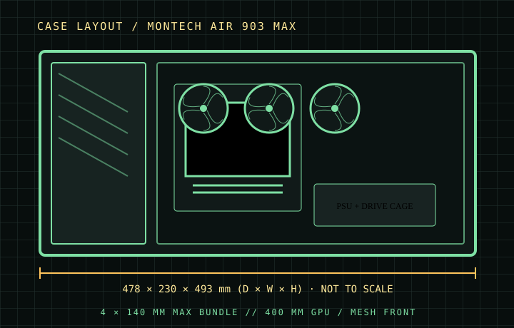

[ CASES // IDENTIFIED CHASSIS ]
Montech AIR 903 MAX
The AIR 903 MAX is a high-airflow chassis with a broad mesh front and four factory-installed 140 mm fans in the MAX package. Its 400 mm graphics-card clearance and 180 mm CPU-cooler limit suit long components, while the drive cage and bottom shroud area remain important for PSU wiring and storage selection.

MODEL SCOPE: Specifications describe the named enclosure generation, not every visually similar case or retail bundle. Published maximums are component-envelope limits; verify the exact SKU, installed fans/radiators, connectors, and manufacturer manual before purchase or assembly.
Dimensions & compatibility
| Cataloged model | Montech AIR 903 MAX |
|---|---|
| Generation / class | 2023 · E-ATX airflow mid-tower |
| External dimensions | 478 × 230 × 493 mm (D × W × H) |
| Motherboard fit | E-ATX, ATX, Micro-ATX and Mini-ITX. |
| Drive compatibility | Two 3.5-inch HDD bays and up to five 2.5-inch positions (mount configuration dependent). |
| Graphics card | Up to 400 mm. |
| CPU air cooler | Up to 180 mm tower height. |
| Power supply | Up to 240 mm, subject to drive-cage position and cable routing. |
| Fans and radiators | MAX bundle includes three 140 mm front ARGB PWM fans and one 140 mm rear PWM fan. Front and roof accept up to 360 mm radiators; rear accepts 120/140 mm. Roof accommodates 3×120 or 2×140 mm fans; optional floor fans depend on clearance. |
Fit notes for this layout
The MAX package is distinct from AIR 903 BASE: verify the MAX suffix for supplied lighting/fan hardware. E-ATX accommodation is a board-width claim, so large board headers and cable routing still need a physical check.
- A 360 mm front radiator occupies intake depth; subtract its thickness and fan stack from the nominal 400 mm GPU allowance.
- Keep PSU cables clear of the lower drive cage; the case’s 240 mm PSU limit does not mean every long PSU and full drive layout can be installed together.
- The stock 140 mm fans are a MAX-bundle feature, not a guaranteed inclusion in every AIR 903 variant.
Source record
- MONTECH — AIR 903 MAXManufacturer fit, storage and cooling specifications.
- TechPowerUp — Montech AIR 903 MAX reviewIndependent enclosure review and specification cross-check.
Case specifications are manufacturer-rated maximums unless stated otherwise. Component shape, mounting hardware and assembly order can reduce practical clearance; consult the exact revision manual when dimensions are critical.